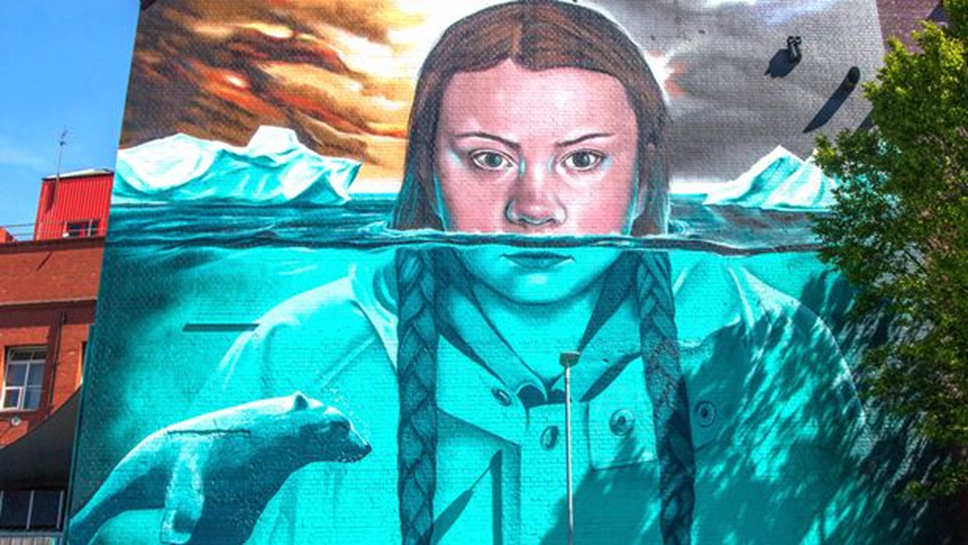
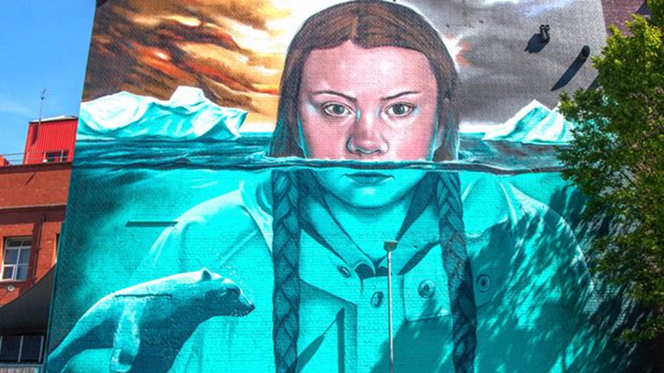

Sustainable Schools
Secondary schools are potential gateways through which to embed a truly
sustainable paradigm shift – combining both continuity of learning with
disruptive reformulation of what needs to be done.
Their connection is both near term in time and space – immediate influence
on their local community and slightly longer in space and time as students
move out into the world enabled with high motivation and capability for
sustainable being.
“Some schools are already becoming learning labs for sustainable
development, where young students are being prepared to adapt to and help
mitigate the consequences of climate change.” World Economic Forum 2015
Aims
Plan
Stakeholders
Schools:
- Rednock,
- Archway,
- Thomas Keble and
- Maidenhill